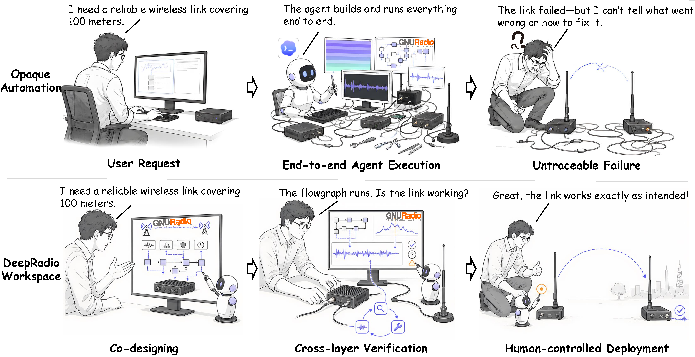
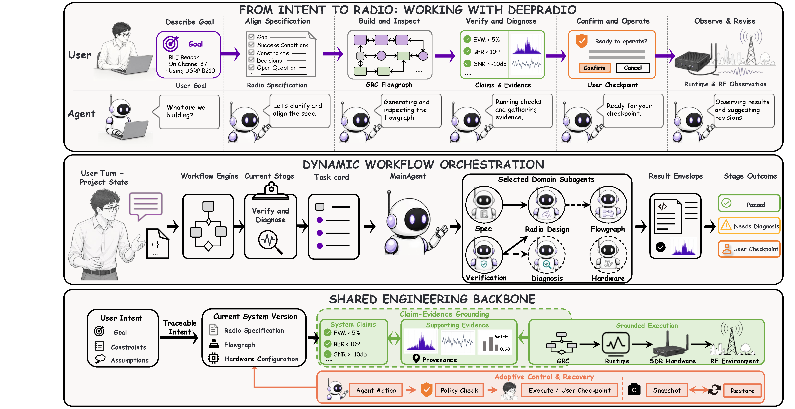
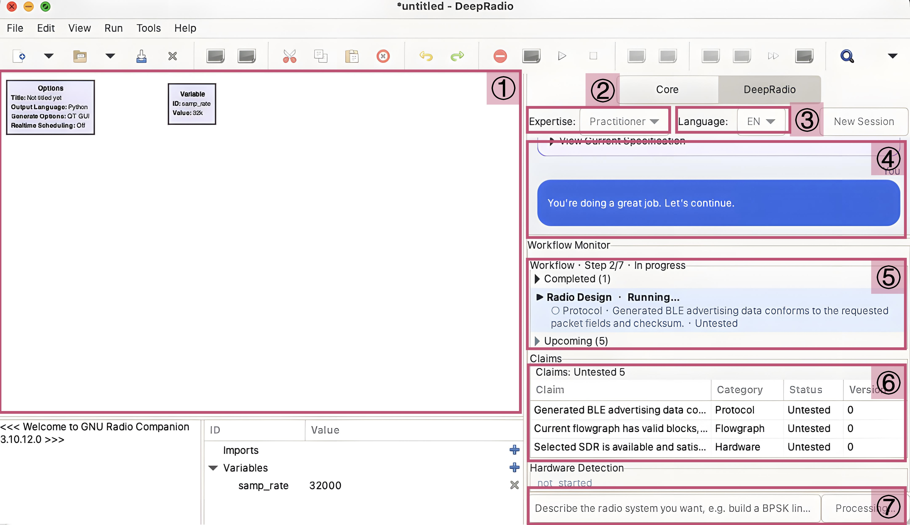
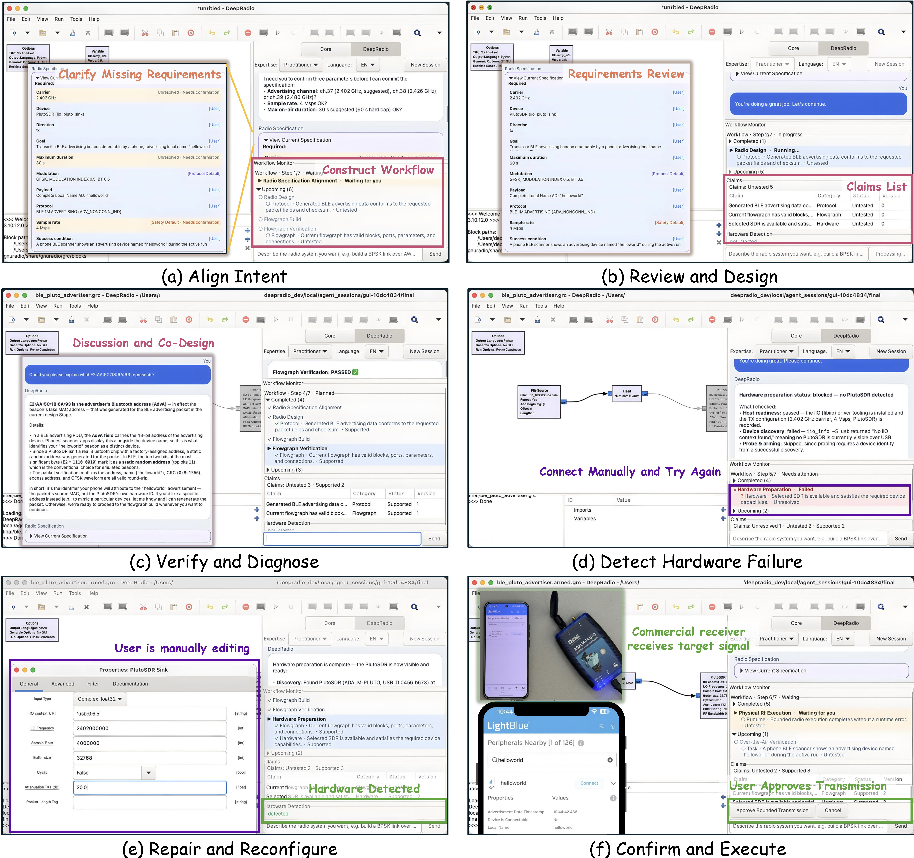
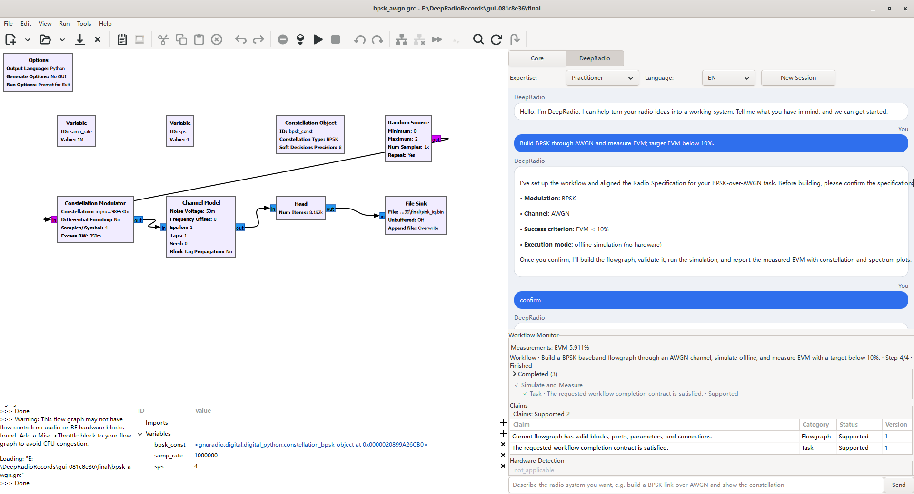
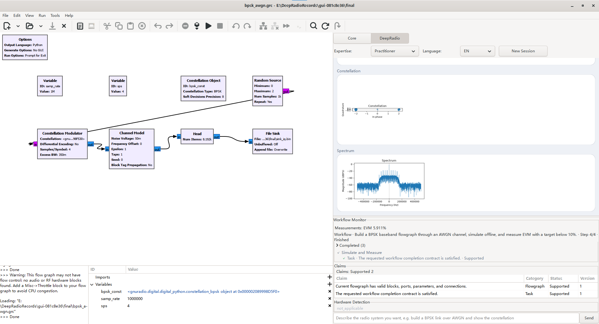
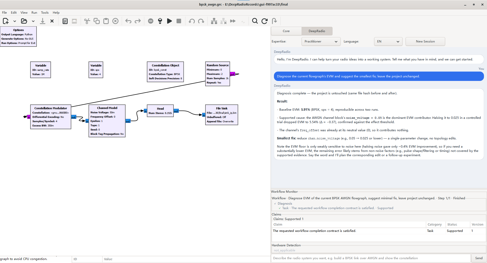
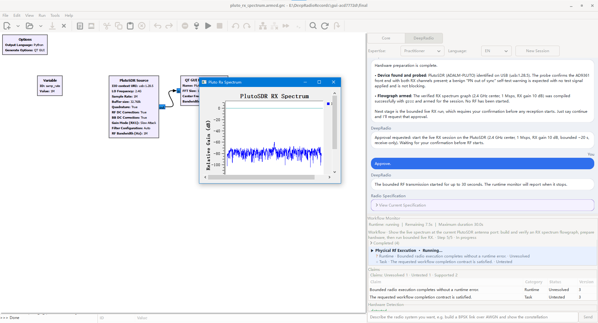
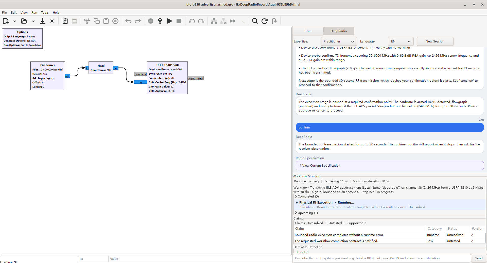
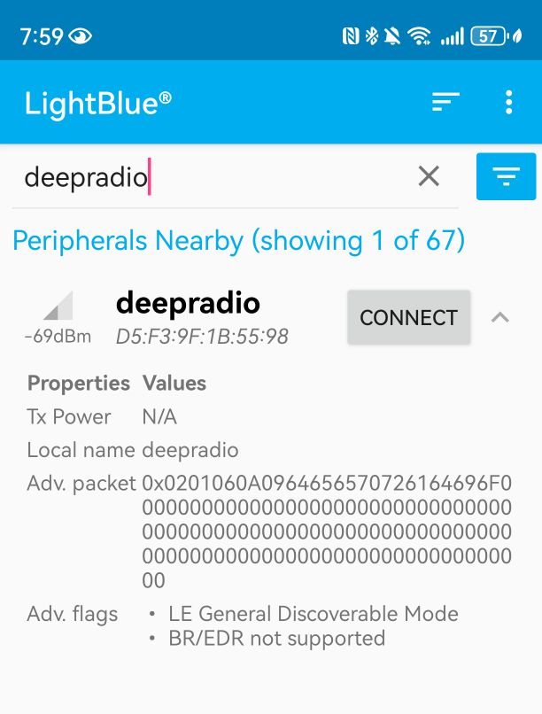

Agentic programming can automate software-defined radio (SDR) development, but decisions can propagate from software to hardware without sufficient user visibility or control. We present DeepRadio, a human–agent workspace embedded in GNU Radio Companion (GRC) for jointly constructing, verifying, and operating physical radio systems. DeepRadio uses a dynamic and state-driven workflow to coordinate a traceable radio specification, claim-oriented cross-layer verification, and mixed-initiative control. These mechanisms expose decisions, tie conclusions to available evidence, and return control to users before consequential hardware actions.
Across seven atomic SDR tasks, DeepRadio completed nearly all runs (95.7%) while satisfying all prescribed software and radio-frequency constraints (100%). In a 20-participant study in a real-world wireless environment, more participants achieved a verified physical deployment with DeepRadio (95%) than with Codex-assisted GRC (50%), reducing the median time to verified success from 34.2 minutes to 14.6 minutes. Participants also reported stronger support for shared intent and understanding while retaining initiative and control.
Building a physical SDR system requires coordinating decisions across protocol design, digital signal processing (DSP), flowgraph structure, runtime configuration, radio hardware, and the over-the-air environment. Rather than imposing a rigid black-box pipeline, DeepRadio organizes human–agent collaboration around the user's evolving intent, a shared versioned engineering state, and empirical evidence produced during execution.

Figure 1: Contrasting opaque end-to-end automation with the DeepRadio workspace for physical radio development. Top: an agent builds and runs a radio system directly from a high-level request, leaving the user unable to trace an unsuccessful physical outcome. Bottom: DeepRadio keeps the development process inspectable through co-design, cross-layer verification, and human-controlled deployment.

Figure 2: DeepRadio connects the user's intent-to-radio process (top), a dynamic and state-driven multi-agent workflow (middle), and a shared engineering backbone for traceable intent, claim–evidence grounding, and adaptive control (bottom).
Externalizes user intent into goals, success conditions, locked constraints, committed decisions, and open questions. Every parameter retains its source provenance (user-provided, protocol default, safety default, inherited, or system-derived) so agent assumptions never silently become user commitments.
Separates verification across seven explicit scopes: Flowgraph, Signal, Protocol, Hardware, Runtime, RF, and Task. Claims and evidence are bound to the tested project version; a valid graph or running process cannot be mistaken for over-the-air reception.
Governs state-changing actions via a deterministic priority policy (Deny → Confirm → Propose → Allow). Multi-block software changes require proposal review with automatic snapshots, while hardware configuration and bounded RF emission require explicit user authorization.

Figure 3: The DeepRadio workspace embedded in GRC: (1) editable flowgraph canvas, (2–3) user expertise and language adaptation, (4) dialogue and expandable radio specification, (5) stage-level workflow monitor, (6) version-bound claims table, and (7) interactive control input.

Figure 4: Six-stage human–agent co-construction walkthrough: (a) eliciting missing requirements, (b) reviewing the specification and workflow, (c) verifying design evidence, (d) catching hardware disconnection safely, (e) manual repair and reconfiguration, and (f) bounded transmission verified by a commercial receiver.
Explore real execution traces captured from the DeepRadio workspace across baseband simulation, non-destructive diagnosis, guided flowgraph reconfiguration, live SDR spectrum observation, and over-the-air BLE physical deployment.
DeepRadio aligns the specification (BPSK modulation, AWGN channel, offline simulation mode, and EVM < 10% success criterion), constructs the executable GRC flowgraph, and runs signal-level verification to produce the constellation and power spectral density plots alongside the quantitative EVM measurement.

Step 1 — Specification Alignment & Flowgraph Generation: DeepRadio externalizes the BPSK/AWGN parameters with provenance tags and builds bpsk_awgn.grc on the canvas.

Step 2 — Cross-Layer Signal Evidence: Simulated constellation (clean clusters at ±1) and spectrum plots confirm an EVM of 5.911%, satisfying the completion contract.
Under a read-only constraint, DeepRadio inspects the active BPSK flowgraph, runs controlled diagnostic checks to isolate the dominant impairment (noise_voltage = 0.05 in the AWGN channel block), and recommends a minimal parameter adjustment while strictly preserving the project state and hash.

DeepRadio discovers and probes the connected PlutoSDR, confirms the receive parameters (2.4 GHz center frequency, 1 Msps sample rate, manual RX gain), and launches a bounded live QT GUI spectrum monitor alongside an offline IQ capture for evidence logging.

Live PlutoSDR Receiver Execution: After hardware discovery and user approval, DeepRadio opens the real-time Pluto Rx Spectrum window while tracking runtime status in the workflow monitor.
DeepRadio synthesizes the BLE PDU (deepradio, 0x64656570726164696F), validates CRC and whitening offline, probes the USRP B210 via UHD, and pauses at a mandatory RF checkpoint. Only after explicit confirmation does it start a bounded 30-second emission and record independent over-the-air reception from a smartphone running LightBlue.

USRP B210 Armed & Transmitting: Following offline packet validation and UHD probe, the user confirms the checkpoint to authorize one bounded 30-second transmission at 2.426 GHz.

Independent Receiver Evidence: LightBlue discovers peripheral deepradio (-69 dBm) with matching payload bytes.
If you find DeepRadio useful in your research or applications, please consider citing our work:
@article{lei2026deepradio,
title={DeepRadio: A Human--Agent Workspace for Physical Radio Development},
author={Lei, Jiazhen and Sha, Yuxin and Wang, Sihan and Li, Wenhui and Sun, Jinyang and Lu, Chengyu and Tian, Xiaohua},
year={2026},
eprint={2611.09418},
archivePrefix={arXiv},
primaryClass={cs.HC},
url={https://arxiv.org/abs/2611.09418}
}